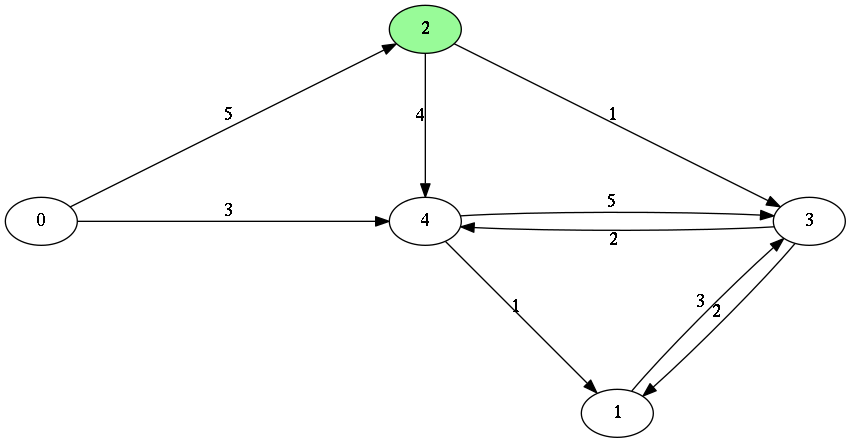
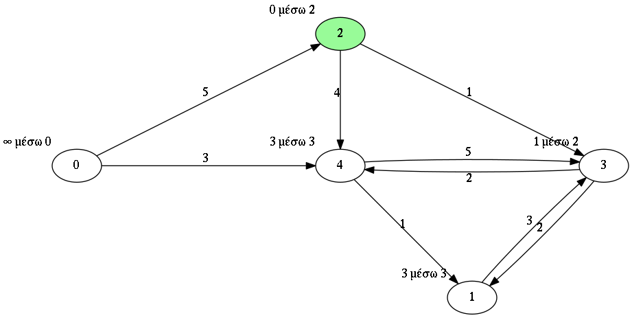

Σε αυτή την άσκηση πρέπει να γράψετε κώδικα που θα υλοποιεί τον αλγόριθμο Dijkstra.
Στο πρόγραμμα θα συμπληρώσετε την μέθοδο
shortestPaths
στην κλάση
Dijkstra
στο πακέτο
gr.duth.ee.euclid.datastructures.dijkstra
.
Το μέγεθος του γραφήματος σε κόμβους ανήκει στο κλειστό διάστημα [5, 100] και δεν χρειάζονται έλεγχοι για να διαπιστωθεί αν είναι όντως σε αυτό το διάστημα.
Για την αναπαράσταση του γραφήματος χρησιμοποιείτε υποχρεωτικά την
έτοιμη υλοποιημένη κλάση
DirectedDistanceGraph
στο πακέτο
gr.duth.ee.euclid.datastructures.dijkstra
.
Για την αναπαράσταση του αποτελέσματος της εκτέλεσης του αλγορίθμου Dijkstra χρησιμοποιείτε υποχρεωτικά την
έτοιμη υλοποιημένη κλάση
DijkstraResult
στο πακέτο
gr.duth.ee.euclid.datastructures.dijkstra
.
Δεν επιτρέπεται οποιαδήποτε τροποποίησή των DirectedDistanceGraph και DijkstraResult, παρά μόνο κατά την
φάση της ανάπτυξης, αν είναι απαραίτητο για λόγους αποσφαλμάτωσης.
Κατά την υποβολή αξιολόγησης, πρέπει να χρησιμοποιηθεί η αρχική της
μορφή.
Η μέθοδος που πρέπει να υλοποιηθεί βρίσκεται μέσα στην κλάση Dijkstra στο πακέτο
gr.duth.ee.euclid.datastructures.dijkstra και είναι η:
public DijkstraResult shortestPaths()
Η μέθοδος αυτή πρέπει να υλοποιεί τον αλγόριθμο Dijkstra και να επιστρέφει ένα κατάλληλα συμπληρωμένο αντικείμενο τύπου DijkstraResult.
Το γράφημα πάνω στο οποίο θα εκτελεστεί ο αλγόριθμος Dijkstra βρίσκεται αποθηκευμένος στην μεταβλητή-μέλος graph.
Η μεταβλητή graph ποτέ δεν θα είναι null και δεν χρειάζονται έλεγχοι για να διαπιστωθεί αν είναι όντως όχι null.
Ο κόμβος από τον οποίο θα αρχίσει η εκτέλεση του αλγορίθμου Dijkstra βρίσκεται αποθηκευμένος στην μεταβλητή-μέλος startNode.
Η μεταβλητή startNode ποτέ δεν θα είναι null και δεν χρειάζονται έλεγχοι για να διαπιστωθεί αν είναι όντως όχι null.
Βολεύει, αλλά δεν είναι υποχρεωτικό, να χρησιμοποιηθεί η μεταβλητή-μέλος result που έχει ήδη αρχικοποιηθεί καταλλήλως για εσάς ως τιμή επιστροφής της μεθόδου.
Η μεταβλητή result ποτέ δεν θα είναι null και δεν χρειάζονται έλεγχοι για να διαπιστωθεί αν είναι όντως όχι null.
Έστω το γράφημα:
Οπτικά μπορεί να αναπαρασταθεί ως:

Εκτελώντας τον αλγόριθμο Dijkstra πάνω του λαμβάνουμε:

Το αποτέλεσμα της ετέλεσης του αλγορίθμου Dijkstra αναπαρίσταται με ένα αντικείμενο τύπου DijkstraResult
το οποίο θα περιέχει τις τιμές:
nodeDistance τύπου double[] = [Double.POSITIVE_INFINITY, 3.0, 0.0, 1.0, 3.0].
nodeThrough τύπου int[] = [0, 3, 2, 2, 3].
DijkstraResult
Η κλάση DijkstraResult χρησιμοποιείται για την αναπαράσταση του αποτελέσματος του αλγορίθμου Dijkstra. Πρέπει να χρησιμοποιήσετε τις μεταβλητές-μέλη
nodeDistance και nodeThrough για να αποθηκεύσετε μέσα το αποτέλεσμα.
Οι μεταβλητές θα πρέπει να περιέχουν:
nodeDistance τύπου double[]: Τις αποστάσεις από τον κόμβο έναρξης startNode, με την κάθε απόσταση να είναι αποθηκευμένη στην αντίστοιχη θέση του πίνακα.
Double.POSITIVE_INFINITY.
nodeThrough τύπου int[]: Τους κόμβους μέσω των οποίων επιτυχγάνονται οι προηγούμενες αποστάσεις.
Παρέχονται αυτόματα στον contructor της κλάσης Dijkstra και όχι στην μέθοδο shortestPaths:
Ένα αντικείμενο της κλάσης DijkstraResult
που να περιέχει τo αποτέλεσμα του αλγορίθμου.
Με βάση το παραπάνω γράφημα:
DirectedDistanceGraph g = new DirectedDistanceGraph(5); g.setEdge(0,2,5); g.setEdge(0,4,3); g.setEdge(1,3,3); g.setEdge(2,3,1); g.setEdge(2,4,4); g.setEdge(3,1,2); g.setEdge(3,4,2); g.setEdge(4,1,1); g.setEdge(4,3,5); int startNode = 2; Dijkstra dijkstra = new Dijkstra(g, startNode); DijkstraResult result = dijkstra.shortestPaths(); assert(result.nodeDistance[0] == Double.POSITIVE_INFINITY); assert(result.nodeDistance[1] == 3.0); assert(result.nodeDistance[2] == 0.0); assert(result.nodeDistance[3] == 1.0); assert(result.nodeDistance[4] == 3.0); assert(result.nodeThrough[0] == 0); assert(result.nodeThrough[1] == 3); assert(result.nodeThrough[2] == 2); assert(result.nodeThrough[3] == 2); assert(result.nodeThrough[4] == 3);
Το μέγεθος των πινάκων nodeDistance: int[] και nodeThrough: double[]
που επιστρέφονται ως οι μεταβλητές-μέλη της κλάσης DijkstraResult ως απάντηση θα πρέπει να έχουν
μέγεθος ακριβώς όσο είναι το πλήθος των κόμβων του γραφήματος. Αν περιέχει
10 διαφορετικούς/διακριτούς κόμβους τότε οι πίνακες που επιστρέφονται πρέπει να έχει μέγεθος
ακριβώς 10. Η αρχικοποίηση που κάνει ο constructor της κλάσης Dijkstra τους αρχικοποιεί σε αυτό το μέγεθος.
Δυστυχώς, οι πίνακες στην Java δεν υποστηρίζουν αυτόματη επέκταση. Δηλαδή δεν μπορεί κανείς να φτιάξει ένα άδειο πίνακα, χωρίς να ορίσει μέγεθος και απλά να προσθέτει στοιχεία και ο πίνακας αυτόματα να αναπροσαρμόζεται για να χωρέσουν τα νέα στοιχεία. Αυτή η δυνατότητα προσφέρεται από τον κλάση java.util.ArrayList.
Εάν αποθηκεύετε στη λίστα με τους κόμβους σε ένα αντικείμενο τύπου ArrayList<Integer> θα πρέπει προτού τερματίσει ο κώδικάς σας να μετατρέπει το αποτέλεσμα από ArrayList<Integer> σε int[] κατάλληλου μεγέθους και να επιστρέφει αυτό ως απάντηση. Αντίστοιχα για ArrayList<Double> σε double[].
Δείτε τα παρακάτω παραδείγματα κώδικα για το πως μπορείτε να χρησιμοποιήσετε την ArrayList.
// στην αρχή του αρχείου κάνετε import την κλάση import java.util.ArrayList;
Εντός της μεθόδου σας μπορείτε να χρησιμοποιήσετε κώδικα ως εξής:
int[] exampleMethod(){
// Κατασκευή ενός άδειου αρχικά “πίνακα” τύπου ArrayList
// που περιέχει Integers
ArrayList<Integer> explored= new ArrayList<Integer>();
// ... άλλοι υπολογισμοί
// Παράδειγμα επανάληψης εντός της οποίας προστίθενται στοιχεία
// στον πίνακα κατά την διάτρεξη
while(traversalNotCompleted){
// ο τρέχων κόμβος είναι ο τάδε
Node currentNode = ....
// ... άλλοι υπολογισμοί
// πρόσθεσε το ID του τρέχοντα κόμβου
// στο τέλος του “πίνακα” explored
explored.add( currentNode.getId() );
}
// ... άλλοι υπολογισμοί
// Μετατροπή του ArrayList<Integer> σε int[] για επιστροφή
// ως αποτέλεσμα
// Κατασκευάζουμε ένα νέο πίνακα int[] μεγέθους όσο είναι το
// μέγεθος του “πίνακα” explored (το μέγεθος του πίνακα explored
// επιστρέφεται από την μέθοδό του size() )
int[] result = new int[explored.size()];
// Περνάμε πάνω από κάθε στοιχείο εντός του explored
for (int i = 0; i < result.length; i++){
// παίρνουμε το i-οστό στοιχείο με την μέθοδό του get(i)
// και το αποθηκεύουμε στο i-οστό στοιχείο του πίνακα result
result[i] = explored.get(i).getId();
}
// Επιστρέφουμε τον πίνακα result
return result;
Καλή επιτυχία!